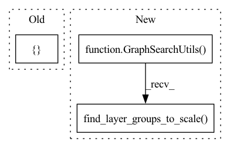

Pattern ID :22144
Before Change
layers = model.layers
mock_layer_groups = [
[layers[1], layers[2]],
[ layers[5], layers[6]After Change
return tf.keras.models.Model([x1, x2], y)
model = generate_model()
graph_search_utils = GraphSearchUtils( model)
layer_groups = graph_search_utils.find_layer_groups_to_scale()
assert len(layer_groups) == 3
def test_convert_layer_group_to_cls_sets_for_consecutive_convolution(self):In pattern: SUPERPATTERN
Frequency: 3
Non-data size: 3
Instances Fragment ID: 70165678
Project Name: quic/aimet
Commit Name: 443bdb16121103af6df3b0e821d5462f8c1c6f2d
Time: 2022-02-20
Author: quic_geunlee@quicinc.com
File Name: TrainingExtensions/tensorflow/test/python/test_cross_layer_equalization_keras.py
M Class Name: TestTrainingExtensionsCrossLayerScaling
N Class Name: TestTrainingExtensionsCrossLayerScaling
M Method Name: test_find_layer_groups_in_network_with_multiple_inputs(1)
N Method Name: test_find_layer_groups_in_network_with_multiple_inputs(1)
M Parent Class:
N Parent Class:
M File Name: TrainingExtensions/tensorflow/test/python/test_cross_layer_equalization_keras.py
N File Name: TrainingExtensions/tensorflow/test/python/test_cross_layer_equalization_keras.py
M Start Line: 213
M End Line: 222
N Start Line: 185
N End Line: 187
Before Change
// TODO: Implement layer group searching logic and replace mock_layer_groups with its result
layers = model.layers
mock_layer_groups = [
[ layers[0], layers[1]After Change
tf.keras.layers.Dense(10)
])
graph_search_utils = GraphSearchUtils( model, (224, 224, 3))
layer_groups = graph_search_utils.find_layer_groups_to_scale()
assert len(layer_groups) == 5
def test_find_layer_groups_in_network_with_residual(self): Fragment ID: 70165690
Project Name: quic/aimet
Commit Name: 443bdb16121103af6df3b0e821d5462f8c1c6f2d
Time: 2022-02-20
Author: quic_geunlee@quicinc.com
File Name: TrainingExtensions/tensorflow/test/python/test_cross_layer_equalization_keras.py
M Class Name: TestTrainingExtensionsCrossLayerScaling
N Class Name: TestTrainingExtensionsCrossLayerScaling
M Method Name: test_find_layer_groups_in_vgg16(1)
N Method Name: test_find_layer_groups_in_vgg16(1)
M Parent Class:
N Parent Class:
M File Name: TrainingExtensions/tensorflow/test/python/test_cross_layer_equalization_keras.py
N File Name: TrainingExtensions/tensorflow/test/python/test_cross_layer_equalization_keras.py
M Start Line: 97
M End Line: 132
N Start Line: 97
N End Line: 125
Before Change
def get_config(self):
pass
model = tf.keras.Sequential([
tf.keras.layers.Conv2D(64, kernel_size=7),
tf.keras.layers.BatchNormalization(),
tf.keras.layers.ReLU(),
tf.keras.layers.MaxPool2D(pool_size=3),
Residual(),
Residual(),
tf.keras.layers.Dense(units=10)After Change
output = tf.keras.layers.Dense(units=10)(model)
keras_model = tf.keras.Model(inputs=input_layer, outputs=output)
graph_search_utils = GraphSearchUtils( keras_model)
layer_groups = graph_search_utils.find_layer_groups_to_scale()
assert len(layer_groups) == 2
def test_find_layer_groups_in_network_with_multiple_inputs(self):
Fragment ID: 70165688
Project Name: quic/aimet
Commit Name: 443bdb16121103af6df3b0e821d5462f8c1c6f2d
Time: 2022-02-20
Author: quic_geunlee@quicinc.com
File Name: TrainingExtensions/tensorflow/test/python/test_cross_layer_equalization_keras.py
M Class Name: TestTrainingExtensionsCrossLayerScaling
N Class Name: TestTrainingExtensionsCrossLayerScaling
M Method Name: test_find_layer_groups_in_network_with_residual(1)
N Method Name: test_find_layer_groups_in_network_with_residual(1)
M Parent Class:
N Parent Class:
M File Name: TrainingExtensions/tensorflow/test/python/test_cross_layer_equalization_keras.py
N File Name: TrainingExtensions/tensorflow/test/python/test_cross_layer_equalization_keras.py
M Start Line: 167
M End Line: 185
N Start Line: 146
N End Line: 157